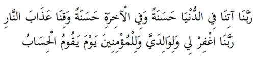
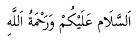

4.Serbest Dualar
Bu salat ve selam dualarından sonra henüz selam vermeden, Hanefilere göre Kuranı kerimden olmak şartıyla dilediği kadar dua okur. Mesela dua anlamındaki şu ayetleri okumak güzeldir:

Bu ayetlerden birincisi Bakara Suresinde, ikincisi ise İbrahim Suresindedir.
Anlamları şöyledir:
“Ey Rabbimiz, bize dünyada da güzellikler, ahirette de güzellikler ver ve bizi ateşin azabından koru... Ey bizim Rabbimiz, hesap günü geldiğinde beni de, annemi ve babamı da, müminleri de bağışla”. Ve:

Es-Selamü aleyküm ve rahmetullah diyerek sağa ve sola selam verir. Allah’ın selamı ve rahmeti üzerinize olsun demektir. Sağında ve solunda melekler ve dünyanın sonuna kadar Salih insanlar vardır, selam verirken onları düşünerek, onlara selam verir. Efendimiz selam verirken arkada olanlar yanaklarını görebilecekleri kadar dönerdi.